Architecture 16 - Galaxy Testing
Contributors
Questions
Where should I put a new test?
How do I write an API test?
When should I use an integration test vs an API test?
How do I test code that requires special Galaxy configuration?
How do I write Selenium/Playwright tests?
Objectives
Use the decision tree to select appropriate test type
Write Python unit tests for isolated components
Write API tests using populators and assertions
Write integration tests with custom Galaxy configuration
Write Selenium tests using the smart component system
Understand CI workflows for each test type
layout: introduction_slides topic_name: Galaxy Architecture
Architecture 16 - Galaxy Testing
The architecture of Galaxy testing.
layout: true left-aligned class: left, middle — layout: true class: center, middle
class: enlarge150
Writing Tests for Galaxy
Tests are essential for Galaxy development:
- Prevent regressions as code evolves
- Document behavior through executable examples
- Enable refactoring with confidence
- Run in CI on every pull request
class: enlarge150
Other Resources
./run_tests.sh --help- Command-line options- GTN Writing Tests Tutorial - Hands-on exercises
client/README.md- Client-side testing details- Galaxy Architecture Slides - CI overview
class: reduce90
Quick Reference
| Test Type | Location | Run Command |
|---|---|---|
| Unit (Python) | test/unit/ |
./run_tests.sh -unit |
| Unit (Client) | client/src/ |
make client-test |
| API | lib/galaxy_test/api/ |
./run_tests.sh -api |
| Integration | test/integration/ |
./run_tests.sh -integration |
| Framework | test/functional/tools/ |
./run_tests.sh -framework |
| Workflow Framework | lib/galaxy_test/workflow/ |
./run_tests.sh -framework-workflows |
| Selenium | lib/galaxy_test/selenium/ |
./run_tests.sh -selenium |
| Playwright | lib/galaxy_test/selenium/ |
./run_tests.sh -playwright |
| Selenium Integration | test/integration_selenium/ |
./run_tests.sh -selenium |
class: center
Which Test Type?

class: enlarge120 left-aligned
Decision Tree Walkthrough
No running server needed? → Unit test
- Python backend →
test/unit/ - ES6/Vue client →
client/src/
Server needed, no browser?
- Standard config → API test
- Custom config → Integration test
- Tool/workflow only → Framework test
Browser needed? → Selenium/Playwright
class: enlarge150 left-aligned
Python Unit Tests
Location: test/unit/
When to use:
- Component can be tested in isolation
- No database or web server needed
- Complex logic worth testing independently
Run: ./run_tests.sh -unit
class: enlarge150 left-aligned
Doctests Guidance
Doctests are executable examples embedded in docstrings - Python runs them to verify documentation stays accurate.
Doctests are more brittle and more restrictive.
Use doctests when:
- Tests serve as documentation (definitely)
- Tests are simple and isolated (maybe)
Use standalone tests when:
- Tests are complex
- Tests need fixtures or mocking
- Tests verify edge cases
class: enlarge120 left-aligned
External Dependency Tests
Tests in test/unit/tool_util/ are “slow” tests that interact with external services:
from .util import external_dependency_management
@external_dependency_management
def test_conda_install(tmp_path):
# ... test conda operations
Run separately:
tox -e mulled
# or:
pytest -m external_dependency_management test/unit/tool_util/
class: enlarge120 left-aligned
Python Unit Test CI
CI Platform: GitHub Actions
Workflow: .github/workflows/unit.yaml
Characteristics:
- Runs on every pull request
- Tests multiple Python versions (3.9, 3.14)
- Moderately prone to flaky failures
- If tests fail unrelated to your PR, request a re-run
class: enlarge150 left-aligned
Frontend Unit Tests
Galaxy’s client unit tests test the ES6/TypeScript/Vue frontend components.
Technologies:
- Vitest - Test framework
- Vue Test Utils - Component testing
- MSW - API mocking
class: reduce90 left-aligned
Test File Structure
Place tests adjacent to code with .test.ts extension (older tests may use .test.js):
src/components/MyComponent/
├── MyComponent.vue
├── MyComponent.test.ts
└── test-utils.ts # optional shared utilities
Standard imports:
import { createTestingPinia } from "@pinia/testing";
import { getLocalVue } from "@tests/vitest/helpers";
import { shallowMount } from "@vue/test-utils";
import { useServerMock } from "@/api/client/__mocks__";
import { beforeEach, describe, expect, it, vi } from "vitest";
class: reduce90 left-aligned
Galaxy Testing Infrastructure
LocalVue Setup - configures BootstrapVue, Pinia, localization:
const localVue = getLocalVue();
// or with localization testing:
const localVue = getLocalVue(true);
Test Data Factories - consistent test data:
import { getFakeRegisteredUser } from "@tests/test-data";
const user = getFakeRegisteredUser({ id: "custom-id", is_admin: true });
class: reduce90
API Mocking with MSW
Galaxy uses MSW with OpenAPI-MSW for type-safe API mocking:
import { useServerMock } from "@/api/client/__mocks__";
const { server, http } = useServerMock();
beforeEach(() => {
server.use(
http.get("/api/histories/{history_id}", ({ response }) => {
return response(200).json({
id: "history-id", name: "Test History",
});
}),
);
});
class: enlarge120
shallowMount vs mount
Prefer shallowMount for client unit tests.
shallowMount (preferred) |
mount |
|---|---|
| Stubs child components | Renders full tree |
| Tests component in isolation | Tests integration |
| Faster, fewer mocks needed | Slower, more setup |
// Preferred: isolated unit test
const wrapper = shallowMount(MyComponent, { localVue, pinia });
Integration testing → use Selenium/Playwright instead.
class: reduce90
Mount Wrapper Factories
Create reusable mount functions for complex setup:
async function mountMyComponent(propsData = {}, options = {}) {
const pinia = createTestingPinia({ createSpy: vi.fn });
const wrapper = shallowMount(MyComponent, {
localVue,
propsData: { defaultProp: "value", ...propsData },
pinia,
...options,
});
await flushPromises();
return wrapper;
}
class: reduce90
Selector Constants & Events
Define selectors as constants:
const SELECTORS = {
SUBMIT_BUTTON: "[data-description='submit button']",
ERROR_MESSAGE: "[data-description='error message']",
};
expect(wrapper.find(SELECTORS.ERROR_MESSAGE).exists()).toBe(true);
Testing emitted events:
await wrapper.find("input").setValue("new value");
expect(wrapper.emitted()["update:value"]).toBeTruthy();
expect(wrapper.emitted()["update:value"][0][0]).toBe("new value");
class: reduce90
Pinia Store Testing
In component tests:
const pinia = createTestingPinia({ createSpy: vi.fn, stubActions: false });
setActivePinia(pinia);
const wrapper = shallowMount(MyComponent, { localVue, pinia });
const userStore = useUserStore();
userStore.currentUser = getFakeRegisteredUser();
Isolated store tests:
beforeEach(() => setActivePinia(createPinia()));
it("updates state correctly", () => {
const store = useMyStore();
store.doAction();
expect(store.someState).toBe("expected");
});
class: enlarge120
Async Operations
Use flushPromises() after API calls:
const wrapper = shallowMount(MyComponent, { localVue, pinia });
await flushPromises(); // Wait for mounted() API calls
Use nextTick() for Vue reactivity:
await wrapper.setProps({ value: "new" });
await nextTick();
expect(wrapper.text()).toContain("new");
class: enlarge120 left-aligned
Testing Best Practices
- Test behavior, not implementation
- Avoid
wrapper.vmdirectly - test through template - One behavior per test
- Descriptive names:
"displays error when API returns 500" - Clean up in
beforeEach/afterEach - Mock external services, not component logic
- Test edge cases: errors, empty data, boundaries
class: reduce90
Good vs Bad Test Examples
GOOD: Test user-visible behavior
test('displays error message when API fails', async () => {
server.use(http.get("/api/data", ({ response }) => response(500).json({})));
const wrapper = shallowMount(MyComponent, { localVue, pinia });
await flushPromises();
expect(wrapper.text()).toContain('Error loading data');
});
BAD: Test implementation details
test('calls fetchData method', () => {
const fetchDataSpy = vi.spyOn(wrapper.vm, 'fetchData');
wrapper.vm.loadData();
expect(fetchDataSpy).toHaveBeenCalled();
});
class: enlarge120
Running Client Tests
Full test run (CI):
make client-test
Watch mode (development):
yarn test:watch
yarn test:watch MyModule # Filter by name
yarn test:watch workflow/run # Filter by path
class: enlarge150 left-aligned
Client Test CI
CI Platform: GitHub Actions
Workflow: .github/workflows/client-unit.yaml
Linting: Run before submitting PRs:
make client-lint # Check for issues
make client-format # Auto-fix formatting
class: enlarge120 left-aligned
Tool Framework Tests Overview
Location: test/functional/tools/
What they test:
- Galaxy tool wrapper definitions (XML)
- Complex tool internals via actual tool execution
- Legacy behavior compatibility
When to use:
- Testing tool XML features
- Verifying tool test assertions work correctly
- No need to write Python - just XML
class: reduce90 left-aligned
Adding a Tool Test
Option 1: Add test block to existing tool
<!-- In test/functional/tools/some_tool.xml -->
<tests>
<test>
<param name="input1" value="test.txt"/>
<output name="out_file1" file="expected.txt"/>
</test>
</tests>
Option 2: Add new tool to sample_tool_conf.xml
<tool file="my_new_tool.xml" />
Run: ./run_tests.sh -framework
class: enlarge120 left-aligned
Workflow Framework Tests
Location: lib/galaxy_test/workflow/
What they test:
- Workflow evaluation engine
- Input handling and connections
- Output assertions
Structure: Each test has two files:
*.gxwf.yml- Workflow definition (Format2 YAML)*.gxwf-tests.yml- Test cases with assertions
Run: ./run_tests.sh -framework-workflows
class: left-aligned reduce70
Workflow Framework Example
Workflow (default_values.gxwf.yml):
class: GalaxyWorkflow
inputs:
input_int:
type: int
default: 1
outputs:
out:
outputSource: my_tool/out_file1
steps:
my_tool:
tool_id: integer_default
in:
input1: { source: input_int }
Tests (default_values.gxwf-tests.yml):
- doc: Test default value works
job: {}
outputs:
out:
asserts:
- that: has_text
text: "1"
class: enlarge120 left-aligned
Framework Test CI
Tool Framework:
- Workflow:
.github/workflows/framework_tools.yaml - Stable, rarely flaky
Workflow Framework:
- Workflow:
.github/workflows/framework_workflows.yaml - Stable, rarely flaky
Both run on every PR and are maintained in GitHub Actions.
class: enlarge120 left-aligned
API Tests Overview
Location: lib/galaxy_test/api/
What they test:
- Galaxy backend via HTTP API
- Standard Galaxy configuration
- Most backend functionality
When to use:
- Testing API endpoints
- Backend logic accessible via API
- No custom Galaxy config needed
Run: ./run_tests.sh -api
class: reduce90
Test Class Structure
from galaxy_test.base.populators import DatasetPopulator
from ._framework import ApiTestCase
class TestMyFeatureApi(ApiTestCase):
dataset_populator: DatasetPopulator
def setUp(self):
super().setUp()
self.dataset_populator = DatasetPopulator(self.galaxy_interactor)
def test_something(self):
history_id = self.dataset_populator.new_history()
response = self._get(f"histories/{history_id}")
self._assert_status_code_is(response, 200)
class: reduce90
HTTP Methods
# GET request
response = self._get("histories")
# POST with data
response = self._post("histories", data={"name": "Test"})
# PUT, PATCH, DELETE
response = self._put(f"histories/{history_id}", data=payload)
response = self._patch(f"histories/{history_id}", data=updates)
response = self._delete(f"histories/{history_id}")
# Admin operations
response = self._get("users", admin=True)
# Run as different user (requires admin)
response = self._post("histories", data=data,
headers={"run-as": other_user_id}, admin=True)
class: enlarge120 left-aligned
Populators Concept
What: Abstractions over Galaxy API for test data creation
Why use them:
- Simpler than raw HTTP requests
- Handle waiting for async operations
- Encapsulate common patterns
- Maintain consistency across tests
Three main populators:
DatasetPopulator- datasets, histories, toolsWorkflowPopulator- workflowsDatasetCollectionPopulator- collections
class: reduce90
DatasetPopulator
self.dataset_populator = DatasetPopulator(self.galaxy_interactor)
# Create history and dataset
history_id = self.dataset_populator.new_history("Test History")
hda = self.dataset_populator.new_dataset(history_id, content="data", wait=True)
# Run a tool
result = self.dataset_populator.run_tool(
tool_id="cat1",
inputs={"input1": {"src": "hda", "id": hda["id"]}},
history_id=history_id
)
self.dataset_populator.wait_for_tool_run(history_id, result, assert_ok=True)
# Get dataset content
content = self.dataset_populator.get_history_dataset_content(history_id)
class: reduce90
DatasetPopulator Advanced
Getting content - multiple ways to specify dataset:
# Most recent dataset in history
content = self.dataset_populator.get_history_dataset_content(history_id)
# By position (hid)
content = self.dataset_populator.get_history_dataset_content(history_id, hid=7)
# By dataset ID
content = self.dataset_populator.get_history_dataset_content(history_id, dataset_id=hda["id"])
The _raw pattern - for testing error responses:
# Convenience: returns parsed dict, asserts success
result = self.dataset_populator.run_tool("cat1", inputs, history_id)
# Raw: returns Response for testing edge cases
response = self.dataset_populator.run_tool_raw("cat1", inputs, history_id)
assert_status_code_is(response, 400) # Test error handling
class: reduce90
WorkflowPopulator
self.workflow_populator = WorkflowPopulator(self.galaxy_interactor)
# Create a simple workflow
workflow_id = self.workflow_populator.simple_workflow("Test Workflow")
# Upload workflow from YAML
workflow_id = self.workflow_populator.upload_yaml_workflow("""
class: GalaxyWorkflow
inputs:
input1: data
steps:
step1:
tool_id: cat1
in:
input1: input1
""")
# Wait for invocation
self.workflow_populator.wait_for_invocation(workflow_id, invocation_id)
class: reduce90
DatasetCollectionPopulator
self.dataset_collection_populator = DatasetCollectionPopulator(
self.galaxy_interactor
)
# Create a list collection
hdca = self.dataset_collection_populator.create_list_in_history(
history_id,
contents=["data1", "data2", "data3"],
wait=True
)
# Create a paired collection
pair = self.dataset_collection_populator.create_pair_in_history(
history_id,
contents=[("forward", "ACGT"), ("reverse", "TGCA")],
wait=True
)
# Create nested collections (list:paired)
identifiers = self.dataset_collection_populator.nested_collection_identifiers(
history_id, "list:paired"
)
class: reduce90
API Test Assertions
from galaxy_test.base.api_asserts import (
assert_status_code_is,
assert_status_code_is_ok,
assert_has_keys,
assert_error_code_is,
assert_error_message_contains,
)
# Check HTTP status codes
response = self._get("histories")
assert_status_code_is(response, 200)
assert_status_code_is_ok(response) # Any 2XX
# Check response structure
data = response.json()
assert_has_keys(data[0], "id", "name", "state")
# Check Galaxy error codes
assert_error_code_is(response, error_codes.USER_REQUEST_INVALID_PARAMETER)
assert_error_message_contains(response, "required field")
class: reduce90
Test Decorators
from galaxy_test.base.decorators import (
requires_admin,
requires_new_user,
requires_new_history,
)
from galaxy_test.base.populators import skip_without_tool
class TestMyApi(ApiTestCase):
@requires_admin
def test_admin_only_endpoint(self):
# Test runs only with admin user
...
@requires_new_user
def test_fresh_user(self):
# Creates new user for test isolation
...
@skip_without_tool("cat1")
def test_cat_tool(self):
# Skips if cat1 tool not installed
...
class: reduce90
Context Managers
User switching:
def test_permissions(self):
# Create resource as default user
history_id = self.dataset_populator.new_history()
# Test access as different user
with self._different_user("other@example.com"):
response = self._get(f"histories/{history_id}")
self._assert_status_code_is(response, 403)
# Test anonymous access
with self._different_user(anon=True):
response = self._get("histories")
# Verify anonymous behavior
class: reduce90
Async & Celery
# Wait for history jobs to complete
self.dataset_populator.wait_for_history(history_id, assert_ok=True)
# Wait for specific job
job_id = result["jobs"][0]["id"]
self.dataset_populator.wait_for_job(job_id, assert_ok=True)
# Wait for workflow invocation
self.workflow_populator.wait_for_invocation(workflow_id, invocation_id)
# Wait for async task (Celery)
self.dataset_populator.wait_on_task(async_response)
ApiTestCase includes UsesCeleryTasks - Celery is auto-configured.
class: enlarge120 left-aligned
API Test CI
CI Platform: GitHub Actions
Workflow: .github/workflows/api.yaml
Characteristics:
- Fairly stable, rarely flaky
- Split into chunks for parallelization
- Uses PostgreSQL (not SQLite)
- Runs on every PR
Failures usually indicate real issues with your changes.
class: enlarge120
Integration Tests Overview
Location: test/integration/
When to use instead of API tests:
- Need custom Galaxy configuration
- Need direct database access
- Need Galaxy app internals (
self._app)
Trade-off: Each test class spins up its own Galaxy server (slower)
Run: ./run_tests.sh -integration
class: reduce90
Example: test_quota.py
from galaxy_test.base.populators import DatasetPopulator
from galaxy_test.driver import integration_util
class TestQuotaIntegration(integration_util.IntegrationTestCase):
dataset_populator: DatasetPopulator
require_admin_user = True
@classmethod
def handle_galaxy_config_kwds(cls, config):
super().handle_galaxy_config_kwds(config)
config["enable_quotas"] = True
def setUp(self):
super().setUp()
self.dataset_populator = DatasetPopulator(self.galaxy_interactor)
def test_create(self):
# ... test quota API
class: enlarge120
Class Attributes
class TestMyFeature(integration_util.IntegrationTestCase):
# Require the default API user to be an admin
require_admin_user = True
# Include Galaxy's sample tools and datatypes
framework_tool_and_types = True
| Attribute | Default | Purpose |
|---|---|---|
require_admin_user |
False | API user must be admin |
framework_tool_and_types |
False | Include sample tools/datatypes |
class: reduce90
Direct Config Options
The simplest pattern - set config values directly:
@classmethod
def handle_galaxy_config_kwds(cls, config):
super().handle_galaxy_config_kwds(config)
config["enable_quotas"] = True
config["metadata_strategy"] = "extended"
config["allow_path_paste"] = True
config["ftp_upload_dir"] = "/tmp/ftp"
The config dict corresponds to galaxy.yml options.
class: reduce90
External Config Files
For complex configs (job runners, object stores), use external files:
import os
SCRIPT_DIRECTORY = os.path.dirname(__file__)
JOB_CONFIG_FILE = os.path.join(SCRIPT_DIRECTORY, "my_job_conf.yml")
class TestCustomRunner(integration_util.IntegrationTestCase):
@classmethod
def handle_galaxy_config_kwds(cls, config):
super().handle_galaxy_config_kwds(config)
config["job_config_file"] = JOB_CONFIG_FILE
Common: job_config_file, object_store_config_file, file_sources_config_file
class: reduce90
Dynamic Config Templates
For configs needing runtime values (temp dirs, ports):
import string
OBJECT_STORE_TEMPLATE = string.Template("""
<object_store type="disk">
<files_dir path="${temp_directory}/files"/>
</object_store>
""")
@classmethod
def handle_galaxy_config_kwds(cls, config):
super().handle_galaxy_config_kwds(config)
temp_dir = cls._test_driver.mkdtemp()
config_content = OBJECT_STORE_TEMPLATE.safe_substitute(
temp_directory=temp_dir
)
config_path = os.path.join(temp_dir, "object_store_conf.xml")
with open(config_path, "w") as f:
f.write(config_content)
config["object_store_config_file"] = config_path
class: reduce90
Configuration Mixins
Mixin classes simplify common configuration patterns:
class TestWithObjectStore(
integration_util.ConfiguresObjectStores,
integration_util.IntegrationTestCase
):
@classmethod
def handle_galaxy_config_kwds(cls, config):
cls._configure_object_store(STORE_TEMPLATE, config)
| Mixin | Purpose |
|---|---|
ConfiguresObjectStores |
Object store setup |
ConfiguresDatabaseVault |
Encrypted secrets |
PosixFileSourceSetup |
File upload sources |
class: reduce90
Accessing Galaxy Internals
Integration tests can access Galaxy’s app object via self._app:
from galaxy.model import StoredWorkflow
from sqlalchemy import select
def test_workflow_storage(self):
# Query database directly
stmt = select(StoredWorkflow).order_by(StoredWorkflow.id.desc())
workflow = self._app.model.session.execute(stmt).scalar_one()
# Access application services
table = self._app.tool_data_tables.get("all_fasta")
# Get managed temp directory
temp_dir = self._test_driver.mkdtemp()
class: reduce90
Skip Decorators & External Services
from galaxy_test.driver import integration_util
@integration_util.skip_unless_docker()
def test_docker_feature(self):
...
@integration_util.skip_unless_kubernetes()
def test_k8s_feature(self):
...
| Decorator | Skips Unless |
|---|---|
skip_unless_docker() |
Docker available |
skip_unless_kubernetes() |
kubectl configured |
skip_unless_postgres() |
Using PostgreSQL |
skip_unless_amqp() |
AMQP URL configured |
class: enlarge120
Integration Test CI
CI Platform: GitHub Actions
Workflow: .github/workflows/integration.yaml
CI provides:
- PostgreSQL database
- RabbitMQ message queue
- Minikube (Kubernetes)
- Apptainer/Singularity
Stability: Moderately prone to flaky failures
class: enlarge120
Selenium Tests Overview
Location: lib/galaxy_test/selenium/
What they test:
- Full-stack UI with real browsers
- User workflows through the interface
- Visual correctness and accessibility
Technologies:
- Selenium WebDriver (browser automation)
- Smart component system (navigation.yml)
Run: ./run_tests.sh -selenium
class: reduce90
API vs UI Methods
Use API methods for setup (faster, more reliable):
self.dataset_populator.new_dataset(self.history_id, content="data")
Use UI methods when testing the UI itself:
self.perform_upload(self.get_filename("1.sam"))
| Scenario | Use | Method |
|---|---|---|
| Need dataset for other test | API | dataset_populator.new_dataset() |
| Testing upload form | UI | perform_upload() |
| Need workflow for test | API | workflow_populator.run_workflow() |
| Testing workflow editor | UI | workflow_run_open_workflow() |
class: reduce90
Test Class Structure
from .framework import (
managed_history,
selenium_test,
SeleniumTestCase,
)
class TestMyFeature(SeleniumTestCase):
ensure_registered = True # Auto-login before each test
@selenium_test
@managed_history
def test_something(self):
self.perform_upload(self.get_filename("1.sam"))
self.history_panel_wait_for_hid_ok(1)
| Attribute | Purpose |
|---|---|
ensure_registered |
Auto-login before each test |
run_as_admin |
Login as admin user instead |
class: enlarge120
Test Decorators
@selenium_test
@managed_history
def test_upload(self):
...
| Decorator | Purpose |
|---|---|
@selenium_test |
Required - handles retries, debug dumps, accessibility |
@managed_history |
Creates isolated history, auto-cleanup |
@selenium_only(reason) |
Skip if using Playwright backend |
@playwright_only(reason) |
Skip if using Selenium backend |
class: reduce90
Smart Component System
Access UI elements via self.components (defined in navigation.yml):
# Access nested components
editor = self.components.workflow_editor
save_button = editor.save_button
# SmartTarget methods wait and interact
save_button.wait_for_visible()
save_button.wait_for_and_click()
save_button.assert_disabled()
# Parameterized selectors
self.components.history_panel.item(hid=1).wait_for_visible()
class: enlarge120
SmartTarget Methods
| Method | Purpose |
|---|---|
wait_for_visible() |
Wait for visibility, return element |
wait_for_and_click() |
Wait then click |
wait_for_text() |
Wait, return .text |
wait_for_value() |
Wait, return input value |
wait_for_absent_or_hidden() |
Wait for element to disappear |
assert_absent_or_hidden() |
Fail if element visible |
assert_disabled() |
Verify disabled state |
all() |
Return list of all matching elements |
class: reduce90
History & Workflow Operations
File uploads:
self.perform_upload(self.get_filename("1.sam"))
self.perform_upload(self.get_filename("1.sam"), ext="txt", genome="hg18")
History panel:
self.history_panel_wait_for_hid_ok(1)
self.history_panel_click_item_title(hid=1)
self.wait_for_history()
Workflows (via RunsWorkflows mixin):
self.workflow_run_open_workflow(WORKFLOW_YAML)
self.workflow_run_submit()
self.workflow_run_wait_for_ok(hid=2)
class: reduce90
Accessibility Testing
@selenium_test automatically runs axe-core accessibility checks.
Component-level checks:
login = self.components.login
login.form.assert_no_axe_violations_with_impact_of_at_least("moderate")
# With known violations excluded
EXCEPTIONS = ["heading-order", "label"]
self.components.history_panel._.assert_no_axe_violations_with_impact_of_at_least(
"moderate", EXCEPTIONS
)
Impact levels: "minor", "moderate", "serious", "critical"
class: reduce90
Shared State Tests
For expensive one-time setup, use SharedStateSeleniumTestCase:
class TestPublishedPages(SharedStateSeleniumTestCase):
@selenium_test
def test_index(self):
self.navigate_to_pages()
# ... test using shared state
def setup_shared_state(self):
# Called once before first test in class
self.user1_email = self._get_random_email("test1")
self.register(self.user1_email)
self.new_public_page()
self.logout_if_needed()
class: enlarge120
Selenium Test CI
CI Platform: GitHub Actions
Workflow: .github/workflows/selenium.yaml
Features:
- Split into 3 chunks for parallelization
- Auto-retry on failure (
GALAXY_TEST_SELENIUM_RETRIES=1) - Debug artifacts uploaded on failure
- PostgreSQL backend
Stability: More prone to flaky failures than API tests
class: enlarge120
Playwright Tests
Same test files as Selenium (lib/galaxy_test/selenium/)
Why Playwright?
- Faster execution
- Better reliability
- Modern browser automation
Run:
./run_tests.sh -playwright
Install browser:
playwright install chromium --with-deps
class: enlarge120
Playwright CI
CI Platform: GitHub Actions
Workflow: .github/workflows/playwright.yaml
Differences from Selenium CI:
- Installs Playwright via
playwright install chromium - Uses headless mode (
GALAXY_TEST_SELENIUM_HEADLESS=1) - Same test splitting (3 chunks)
Both Selenium and Playwright CI run on every PR.
class: enlarge120
Selenium Integration Tests
Location: test/integration_selenium/
Combines:
- Selenium browser automation
- Integration test config hooks (
handle_galaxy_config_kwds)
When to use:
- UI testing that needs custom Galaxy configuration
- Testing UI features behind config flags
Run: ./run_tests.sh -integration test/integration_selenium
class: enlarge120
Selenium Integration CI
Example: test/integration_selenium/test_upload_ftp.py
- Tests FTP upload UI
- Requires
ftp_upload_dirconfiguration
CI Platform: GitHub Actions
Workflow: .github/workflows/integration_selenium.yaml
Runs on every PR, similar stability to regular Selenium tests.
class: enlarge120
Handling Flaky Tests
Some tests fail intermittently due to:
- Race conditions
- Timing issues
- External dependencies
Galaxy’s approach:
- Track via GitHub issues with
transient-test-errorlabel - Mark tests with
@transient_failuredecorator - Modified error messages help reviewers identify non-blocking failures
class: enlarge120
@transient_failure Decorator
from galaxy.util.unittest_utils import transient_failure
@transient_failure(issue=21224)
@selenium_test
def test_sharing_private_history(self):
# Test that sometimes fails due to race condition
...
Parameters:
issue- GitHub issue number tracking this failurepotentially_fixed=True- Indicates fix was implemented
When test fails, error message includes issue link and tracking info.
class: enlarge120
Flaky Test Workflow
- Identify - Test fails intermittently in CI
- Track - Create GitHub issue with
transient-test-errorlabel - Mark - Add
@transient_failure(issue=XXXXX)decorator - Fix - When implemented, set
potentially_fixed=True
@transient_failure(issue=21242, potentially_fixed=True)
def test_delete_job_with_message(self, history_id):
...
- Close - If no failures for ~1 month, remove decorator and close issue
class: enlarge120
Running Tests Reference
Quick reference:
./run_tests.sh --help # Full documentation
# Common patterns
./run_tests.sh -unit # Python unit tests
./run_tests.sh -api # API tests
./run_tests.sh -integration # Integration tests
./run_tests.sh -selenium # Selenium tests
./run_tests.sh -framework # Tool framework tests
Client tests:
make client-test # All client tests
yarn --cwd client test:watch # Watch mode
.footnote[Previous: Galaxy Production Deployment]
Key Points
- Unit tests for isolated components (no server needed)
- API tests for backend behavior via Galaxy API
- Integration tests for custom Galaxy configurations
- Framework tests for tool/workflow XML validation
- Selenium/Playwright tests for UI with browser automation
- Populators simplify test data creation
- Each test type has a dedicated CI workflow
Thank you!
This material is the result of a collaborative work. Thanks to the Galaxy Training Network and all the contributors! Tutorial Content is licensed under
Creative Commons Attribution 4.0 International License.
Tutorial Content is licensed under
Creative Commons Attribution 4.0 International License.